4.22 概念密度泛函理论 (conceptual density functional theory, CDFT) 分析实例
4.22.1 自动计算苯酚的概念密度泛函理论量
注
本节的中文版是我的博客文章“使用 Multiwfn 轻松计算概念密度泛函理论中定义的各种量”(http://sobereva.com/484)。
在本节中，我将展示如何非常方便地计算概念密度泛函理论 (conceptual density functional theory, CDFT) 框架下定义的几乎所有量。以苯酚为例。由于苯酚是中性分子，N、N+1 和 N-1 电子态分别对应中性态、阴离子态和阳离子态。
在学习本例之前，请先阅读第 3.25 节，其中描述了将要计算的所有量和基本用法。
所需波函数文件的准备
应首先优化中性态的苯酚，请自行完成。examples\phenol.xyz 是在广泛使用的 B3LYP/6-31G* 水平下优化得到的苯酚几何构型，其质量足以满足本研究。
启动 Multiwfn 并输入以下命令：
examples\phenol.xyz
22 // Calculate various quantities in conceptual density functional theory
1 // Generate .wfn files for N, N+1 and N-1 electrons states
[Press ENTER button directly] // The generated .gjf files will correspond to single point task at B3LYP/6-31G* level
[Press ENTER button directly] // Use default charge and spin multiplicity, namely 0 1 for N state, -1 2 for N+1 state, and 1 2 for N-1 state现在当前目录下已生成 N.gjf、N+1.gjf 和 N-1.gjf，它们分别是用于生成 N.wfn、N+1.wfn 和 N-1.wfn 的单点任务输入文件。现在可以用 Gaussian 手动运行它们。如果不修改这些文件中 .wfn 文件的生成路径，运行后，对于 Linux 版 Gaussian，它们将生成在当前目录下，而对于 Windows 版，它们将生成在 Gaussian 临时目录下。
也可以让 Multiwfn 直接调用 Gaussian 运行 .gjf 文件。假设已将 settings.ini 中的 "gaupath" 参数设为 Gaussian 可执行文件的实际路径，现在可以在 Multiwfn 窗口中输入 y，则 .gjf 文件将被 Gaussian 执行，生成的 .wfn 文件将出现在当前目录下，之后 .gjf 和 .out 文件将被自动删除。
注
Multiwfn 也能生成 ORCA 程序的输入文件以生成 .wfn 文件。为此，应先选择一次选项 -2，再选择选项 1，则将生成三个 ORCA 输入文件。用 ORCA 手动运行它们之后，将得到 N.wfn、N-1.wfn、N+1.wfn，应将它们移动到 Multiwfn 目录下。
计算全局指数和原子指数
因为当前目录下已提供 N.wfn、N+1.wfn 和 N-1.wfn，现在可以开始计算 CDFT 量。选择选项 "2 Calculate various quantitative indices"，则 Multiwfn 开始计算 Hirshfeld 电荷并从 .wfn 文件中提取信息，结果输出到当前目录下的 CDFT.txt 中。内容如下所示，都是不言自明的。该文件也已作为 examples\CDFT.txt 提供。
Hirshfeld charges, condensed Fukui functions and condensed dual descriptors
Units used below are "e" (elementary charge)
Atom q(N) q(N+1) q(N-1) f- f+ f0 CDD
1(C ) -0.0587 -0.1185 0.0852 0.1439 0.0598 0.1018 -0.0841
2(C ) -0.0390 -0.1674 0.0268 0.0658 0.1284 0.0971 0.0626
3(C ) -0.0597 -0.1873 0.0319 0.0916 0.1276 0.1096 0.0360
...[ignored]
Condensed local electrophilicity/nucleophilicity index (e*eV)
Atom Electrophilicity Nucleophilicity
1(C ) 0.02576 0.45535
2(C ) 0.05533 0.20827
3(C ) 0.05496 0.28982
...[ignored]
Condensed local softness (e/Hartree), relative electrophilicity/nucleophilicity (dimensionless) and condensed local hyper-softness (e/Hartree^2)
Atom s- s+ s0 s+/s- s-/s+ s(2)
1(C ) 0.3761 0.1562 0.2661 0.4154 2.4075 -0.5746
2(C ) 0.1720 0.3355 0.2538 1.9501 0.5128 0.4271
3(C ) 0.2392 0.3333 0.2863 1.3933 0.7177 0.2459
...[ignored]
E(N): -307.464860 Hartree
E(N+1): -307.383614 Hartree
E(N-1): -307.163438 Hartree
E_HOMO(N): -0.218913 Hartree, -5.9569 eV
E_HOMO(N+1): 0.161297 Hartree, 4.3891 eV
E_HOMO(N-1): -0.464864 Hartree, -12.6496 eV
First vertical IP: 0.301421 Hartree, 8.2021 eV
First vertical EA: -0.081246 Hartree, -2.2108 eV
Mulliken electronegativity: 0.110088 Hartree, 2.9956 eV
Chemical potential: -0.110088 Hartree, -2.9956 eV
Hardness (=fundamental gap): 0.382667 Hartree, 10.4129 eV
Softness: 2.613235 Hartree^-1, 0.0960 eV^-1
Softness^2: 6.828998 Hartree^-2, 0.0092 eV^-2
Electrophilicity index: 0.015835 Hartree, 0.4309 eV
Nucleophilicity index: 0.116285 Hartree, 3.1643 eV可将上面所示的凝聚 Fukui 函数和凝聚对偶描述符与第 4.7.3 节中手动计算的结果比较，会发现数据完全一致。显然，使用本模块计算 CDFT 量比手动计算容易得多！
注
坦率地说，输出的涉及 N+1 态能量的值（如垂直电子亲和能和 Mulliken 电负性）不是很准确，因为众所周知，要获得相对准确的阴离子体系能量，必须使用弥散函数。因此，若需要这些量的更好结果，在用 Multiwfn 准备 Gaussian 输入文件时，建议选择至少 6-311+G* 水平的基组。
计算 Fukui 函数和对偶描述符
接下来研究 Fukui 函数 (f) 和对偶描述符 (Δf)，它们是实空间函数。选择选项 "3 Calculate grid data of Fukui function, dual descriptor and related functions "，再选择 "2 Medium-quality grid"，则 Multiwfn 自动计算 N、N+1 和 N-1 态的电子密度格点数据。之后，可选择相应选项来可视化 Fukui 函数或对偶描述符，或将它们作为 cube 文件导出到当前目录下。Multiwfn 绘制的各种 f 和 Δf 汇总在下图中，所有等值面值均设为 0.007 a.u.：
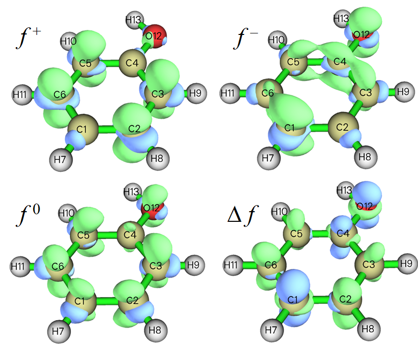
从上图可以发现，本模块自动生成的 f 和 Δf 与第 4.5.3 节中利用主功能 5 的自定义操作功能手动得到的结果相同。无疑使用本模块方便得多！
注
如第 4.5.4 节所述，对偶描述符也可基于 N-1 和 N+1 态的自旋密度近似评估，然而在本模块中，对偶描述符及其凝聚形式是以精确方式评估的。
值得注意的是，若用相应选项将格点数据导出为 cube 文件，则可用第 4.A.14 节所述方法，通过 VMD 以最高水准的质量将上述函数非常快速、容易地绘制为等值面图。例如，下图是经 VMD 渲染的 $f^-$ 函数。
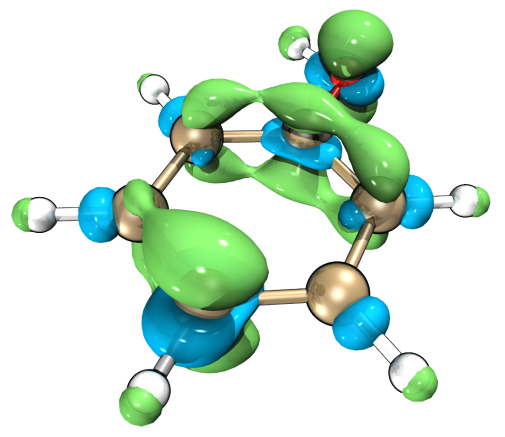
计算局域（超）软度和局域亲电/亲核指数
上面介绍的模块还可用于导出或可视化局域软度、局域超软度、局域亲电指数和局域亲核指数。
例如，我们将导出局域亲电指数的 cube 文件，回想其定义就是 $f^+$ 乘以全局亲电指数。因此，选择选项 "-1 Set the scale factor to various grid data"，输入 0.4309（即选项 2 输出的以 eV 为单位的全局亲电指数，见 CDFT.txt），再选择选项 "5 Export grid data of scaled f+ as f+.cub in current folder"。现在，导出的 f+.cub 即对应局域亲电指数，单位为 eV/Bohr³。
下一个例子，我们将导出局域超软度 (local hyper-softness, LHS) 的 cube 文件，其定义和实用价值在 J. Math. Chem., 62, 461 (2024) 中有仔细讨论。它可简单地用 Δf 乘以全局软度的平方来评估。因此，选择选项 "-1 Set the scale factor to various grid data" 并输入 6.828998（即选项 2 输出的以 Hartree⁻² 为单位的 softness²，见前述 CDFT.txt），再选择选项 "5 Export grid data of scaled dual descriptor as DD.cub in current folder"。现在，导出的 DD.cub 即对应局域超软度，单位为 1/(Bohr³Hartree²)，或简记为 a.u.。
$\omega_{\mathrm{cubic}}$ 和 ε 的计算
如第 3.25 节所述，亲电指数 $\omega_{\mathrm{cubic}}$ 在研究弱相互作用时很有用，至少对卤键如此，而亲电描述符 ε 是与亲电性关联比 ω 更好的量。若还想计算它们，进入本模块后应先选选项 -1 将其状态切换为 "Yes"，然后按上面所示例子操作（即借助选项 1 准备 .wfn 文件，再用选项 2 执行计算），则选项 2 输出的 CDFT.txt 将包含 $\omega_{\mathrm{cubic}}$、其在每个原子上的凝聚值以及 ε。一个中间量，即第二垂直电离能，也会被打印输出。
更具体地，对本例而言，进入本模块后应输入
-1 // Toggle calculating ω_cubic and ε
1 // Generate .wfn files for N, N+1, N-1, N-2 electronic states
[Press ENTER button directly] // Use B3LYP/6-31G* level
[Press ENTER button directly] // Use default charge and spin multiplicity, namely 0 1 for N state, -1 2 for N+1 state, 1 2 for N-1 state, 2 1 for N-2 state现在运行新生成的四个 .gjf 文件以获得 N.wfn、N+1.wfn、N-1.wfn 和 N-2.wfn，再选择选项 2。从输出的 CDFT.txt 中可找到：
Cubic electrophilicity index (w_cubic): 0.021716 Hartree, 0.5909 eV
Electrophilic descriptor (epsilon): 0.080522 Hartree, 2.1911 eV4.22.2 轨道加权 Fukui 函数和轨道加权对偶描述符研究示例
注
本节附带扩展讨论和更多例子的中文版是我的博客文章“通过轨道加权 Fukui 函数和轨道加权对偶描述符预测亲核与亲电反应位点”(http://sobereva.com/533)。
请先阅读第 3.25.3 节，其中介绍了轨道加权 Fukui 函数（${f}_{w}^{+}$ 和 ${f}_{w}^{-}$）和对偶描述符 $\Delta {f}_{w}$，也给出了一些重要说明。在本节中我们将用这些函数研究几个体系。
第一部分：C₆₀
在本部分我们将用轨道加权函数揭示 C₆₀ 的反应位点，它具有高点群对称性，前线分子轨道高度简并。像这样的分子无法用标准形式的 Fukui 函数和对偶描述符合理研究。该体系在 B3LYP/6-31G* 水平下生成的 .fch 文件可从 http://sobereva.com/multiwfn/extrafiles/C60.zip 下载，它是本分析的输入文件。
启动 Multiwfn 并输入以下命令
C60.fch
22 // Calculate various quantities in conceptual density functional theory在当前菜单中，可用选项 4 设置后续轨道加权计算中使用的 Δ 参数，本例中保持默认值（0.1 Hartree）不变，只有当发现结果不满意时才应适当修改。
我们首先可视化轨道加权函数的等值面。输入以下命令
7 // Calculate grid data of OW Fukui function and OW dual descriptor
2 // Medium quality然后可用相应选项可视化 ${f}_{w}^{+}$、${f}_{w}^{-}$、${f}_{w}^{0}$ 和 $\Delta {f}_{w}$ 的等值面，如下图所示。注意应将等值面值改为合适的值，否则等值面可能完全不可见。下图使用 0.0003 a.u. 的等值面绘制。
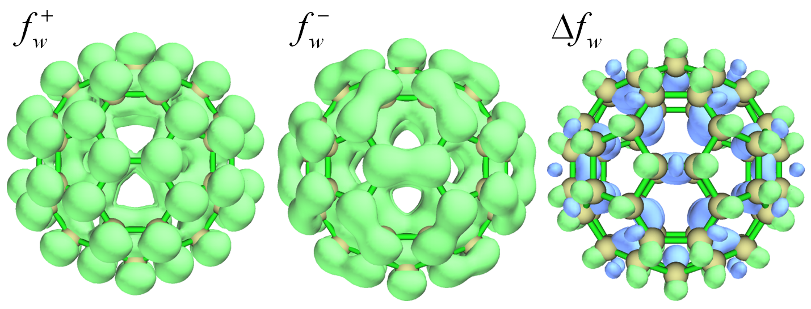
在上图中，绿色和蓝色等值面分别代表正部和负部。可见，所有轨道加权函数的分布都符合分子点群对称性，这是轨道加权形式独有的优势。相比之下，若绘制 HOMO 密度（对应于 $f^-$ 的冻结轨道形式）或经有限差分（$ρ_{N}$ − $ρ_{N}$₋₁）计算并绘制 $f^-$，会发现它们的分布反直觉（与分子对称性不一致），因而在揭示反应位点时毫无用处。如第 4.5.4 节中介绍的，具有大正值 $f^-$ 或显著负 Δf 的区域对应具有显著亲核性的位点，或等价地说，易受亲电攻击。从上图可发现，最有亲电攻击倾向的位点是 [6,6] 型 C-C 键（即两个相邻六元环共用的键）上方的区域。这一观察与实验发现完全一致（详见 $\Delta {f}_{w}$ 原论文，即 J. Phys. Chem. A，123，10556 (2019) 中的广泛讨论），该结论还可根据平均局域电离能在 vdW 表面上极小值的分布进一步证实，关于如何做这种分析见第 4.12.2 节。
轨道加权形式的 Fukui 函数和对偶描述符由多个轨道贡献。若想查看权重以更好理解轨道加权函数如何工作，在本模块中可选择 "5 Print current orbital weights used in orbital-weighted (OW) calculation"，则将看到
10 Highest weights in orbital-weighted f+
Orbital 181 (LUMO ) Weight: 12.47 % E_diff: 1.752 eV
Orbital 182 (LUMO+1) Weight: 12.47 % E_diff: 1.752 eV
Orbital 183 (LUMO+2) Weight: 12.47 % E_diff: 1.752 eV
Orbital 184 (LUMO+3) Weight: 6.32 % E_diff: 2.847 eV
Orbital 185 (LUMO+4) Weight: 6.32 % E_diff: 2.847 eV
Orbital 186 (LUMO+5) Weight: 6.32 % E_diff: 2.847 eV
Orbital 187 (LUMO+6) Weight: 4.70 % E_diff: 3.207 eV
Orbital 188 (LUMO+7) Weight: 4.70 % E_diff: 3.207 eV
Orbital 189 (LUMO+8) Weight: 4.70 % E_diff: 3.207 eV
10 Highest weights in orbital-weighted f-
Orbital 180 (HOMO ) Weight: 9.06 % E_diff: -1.752 eV
Orbital 179 (HOMO-1) Weight: 9.06 % E_diff: -1.752 eV
Orbital 178 (HOMO-2) Weight: 9.06 % E_diff: -1.752 eV
Orbital 177 (HOMO-3) Weight: 9.06 % E_diff: -1.752 eV
Orbital 176 (HOMO-4) Weight: 9.06 % E_diff: -1.752 eV
Orbital 175 (HOMO-5) Weight: 5.02 % E_diff: -2.728 eV
Orbital 174 (HOMO-6) Weight: 5.02 % E_diff: -2.728 eV
Orbital 173 (HOMO-7) Weight: 5.02 % E_diff: -2.728 eV
Orbital 172 (HOMO-8) Weight: 5.02 % E_diff: -2.728 eV
Orbital 171 (HOMO-9) Weight: 5.02 % E_diff: -2.728 eV"E_diff" 是轨道能量与近似取为 E(HOMO) 和 E(LUMO) 平均值的化学势之差。显然，轨道能量越接近化学势，该轨道的权重越高。
也可计算凝聚的 ${f}_{w}^{+}$、${f}_{w}^{-}$、${f}_{w}^{0}$ 和 $\Delta {f}_{w}$，从而定量研究它们在每个原子位点的值。为此，在本模块中应选择 "6 Calculate condensed OW Fukui function and OW dual descriptor"。然而，这些凝聚量对上面研究的 C₆₀ 没有意义，因为所有原子在空间上等价。
顺便值得一提的是，${f}_{w}^{+}$、${f}_{w}^{-}$、${f}_{w}^{0}$ 和 $\Delta {f}_{w}$ 在分子表面上的极值可通过定量分子表面分析模块精确定位，从而定量比较不同区域的值。使用该模块的许多例子已在第 4.12 节中给出。下面我们考察 $\Delta {f}_{w}$ 在 ρ = 0.01 a.u. 等值面上的极值。首先，将 settings.ini 中的 "iuserfunc" 参数设为 98，因为如第 2.7 节所述，$\Delta {f}_{w}$ 对应第 98 个自定义函数。然后启动 Multiwfn 并输入
C60.fch
12 // Quantitative analysis of molecular surface
1 // Select the way to define surface
1 // Isosurface of electron density
0.01 // Use ρ = 0.01 a.u. isosurface to define the surface
2 // Select mapped function
-1 // User-defined real space function, which now corresponds to ∆f_w
3 // Spacing of grid points for generating molecular surface
0.25 // Use slightly larger grid spacing than default to reduce cost. This setting is already fine enough for present investigation
0 // Start analysis计算完成后，在后处理菜单中选择选项 0 可视化极值点。为使图形清晰，将 GUI 中的 "Ratio of atomic size" 改为 3.0 以放大原子球。GUI 窗口中的图形如下所示。标出了 $\Delta {f}_{w}$ 的几个极小值点（蓝色小球），数值可从文本窗口找到。红色小球对应极大值点。
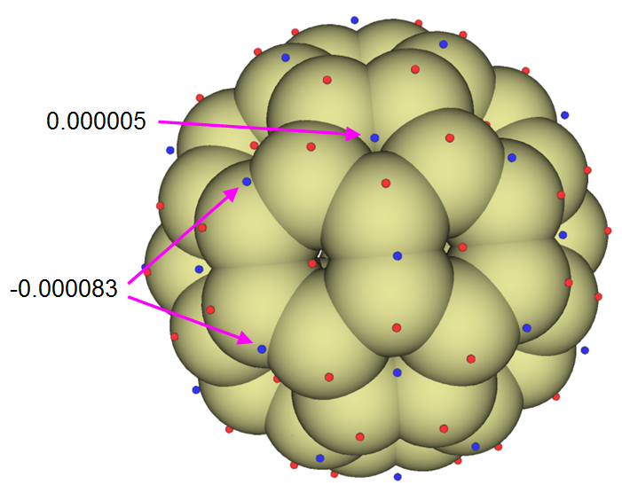
可见，[6,6] 键上方的 $\Delta {f}_{w}$ 比其它区域明显更负，因此这些位置具有最高的亲电反应活性。虽然每个五元环中心上方也有表面极小值，但数值略为正，因此五元环没有参与亲电反应的明显倾向。
第二部分：环[18]碳
环[18]碳在我的工作 Carbon，165，468 (2020)、Carbon，165，461 (2020) 及 http://sobereva.com/carbon_ring.html 中有非常系统的研究。该体系具有高对称性（D$_{9h}$），因而非常适合用轨道加权函数研究。该体系的 .fchk 可直接经 http://sobereva.com/multiwfn/extrafiles/C18.zip 下载，是在 ωB97XD/def2-TZVP 水平下生成的。该体系 $\Delta {f}_{w}$ =0.0008 a.u. 的等值面如下所示。
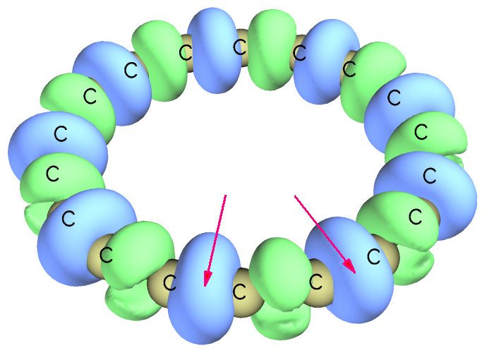
环[18]碳含有两种 C-C 键，一种短、一种长，交替出现。两条短键用红色箭头标出。从上图可清楚看到，短 C-C 键和长 C-C 键分别易受亲电和亲核攻击，因为前者被负等值面包围，后者被正等值面包围。
在 Multiwfn 中，也可将 $\Delta {f}_{w}$ 绘制为平面图。例如，我们将环[18]碳分子平面上的 $\Delta {f}_{w}$ 绘制为颜色填充图。先将 settings.ini 中的 "iuserfunc" 参数设为 98，然后启动 Multiwfn 并输入
C18.fchk
4 // Plot plane map
100 // User-defined real space function, which now corresponds to ∆f_w
1 // Color-filled map
[Press ENTER button to use default grid setting]
1 // XY plane
0 // Z=0关闭弹出的图，然后在后处理菜单中调整一些设置并重绘，之后将看到下图。蓝色等高线对应 vdW 表面。
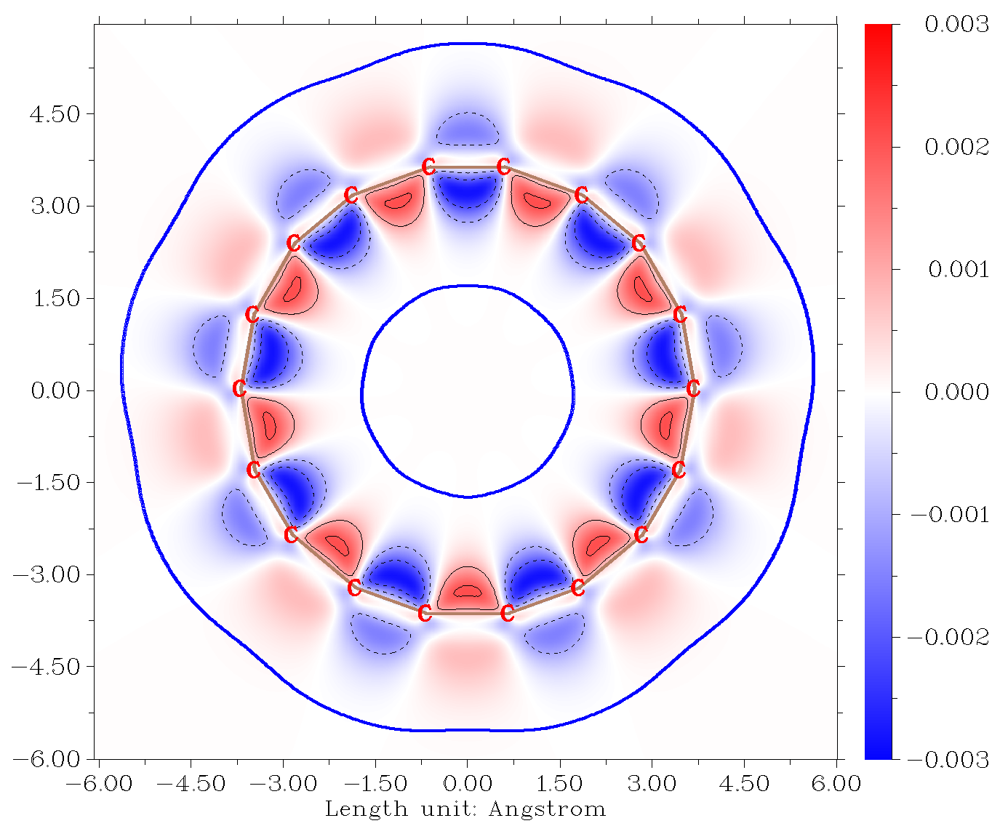
从上图可发现，环的内侧边缘比外侧边缘更具反应活性，因为内侧边缘的 $\Delta {f}_{w}$ 绝对值更大。
第三部分：CH₃Cl
最后，我们用 $\Delta {f}_{w}$ 研究 CH₃Cl 的反应活性。输入文件为 examples\CH3Cl.fchk。用与上面例子相同的方式计算 $\Delta {f}_{w}$ 的格点数据，然而，为了获得更好的图形效果，这次不在 Multiwfn 中直接可视化等值面，而是经相应选项将 $\Delta {f}_{w}$ 的格点数据导出为 OW_DD.cub，再用第 4.A.14 节所述方法经 VMD 程序轻松渲染为等值面图。0.008 a.u. 的等值面如下所示。
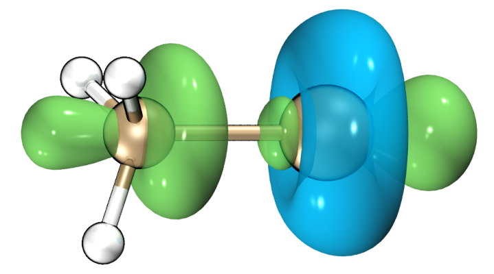
可见，Cl 原子周围出现环形负区域，表明该区域呈现 Lewis 碱特征。在 C-Cl 键两端 $\Delta {f}_{w}$ 明显为正，表明碳端的位点易受亲电攻击（如 SN₂ 反应），而 Cl 端的位点表现为 Lewis 酸，这与存在 σ-hole 区域的事实一致。
顺便说一下，也可像 C₆₀ 的例子那样研究 $\Delta {f}_{w}$ 在分子表面上的极值，从而在定量水平上讨论 $\Delta {f}_{w}$。
4.22.3 （准）简并 HOMO/LUMO 情形的 CDFT 分析实例
如第 3.25.4 节所述，除采用轨道加权形式外，当 HOMO 和/或 LUMO （准）简并时，Multiwfn 还支持另一种形式的 CDFT 分析。该形式仅依赖电子密度，因而理论上比轨道加权形式更严格，代价是额外的计算量，因为还应计算 N+p 和 N-q 态的波函数文件，其中 p 和 q 分别为 LUMO 和 HOMO 的简并度。下面给出两个例子。
4.22.3.1 苯的 Fukui 函数和对偶描述符
在本节以苯为例说明考虑 HOMO/LUMO 简并时 Fukui 函数和对偶描述符的计算。因为需要基于轨道能量确定简并度，所以应首先为所研究的结构生成一个波函数文件。examples\benzene.fch 是由 Gaussian 16 在 B3LYP/6-31G* 水平下几何优化任务产生的波函数文件。
启动 Multiwfn 并输入
examples\benzene.fch
22 // Calculate various quantities in conceptual density functional theory
-3 // Set degree of frontier molecular orbital degeneracy现在屏幕上显示最低 10 个非占据轨道的信息，以帮助确定 LUMO 简并度
...[ignored]
Orbital 25 (LUMO+3) Energy: 3.838 eV E_diff: 3.737 eV
Orbital 24 (LUMO+2) Energy: 2.346 eV E_diff: 2.246 eV
Orbital 23 (LUMO+1) Energy: 0.100 eV E_diff: 0.000 eV
Orbital 22 (LUMO ) Energy: 0.100 eV从轨道能量可清楚看出 LUMO 和 LUMO+1 严格简并，而 LUMO+2 能量明显更高，因此 LUMO 简并度为 2。在此输入 2（注意 Multiwfn 提示若在此直接按回车，将使用简并度 2。这是因为 Multiwfn 通过统计有多少非占据轨道能量与 LUMO 相差小于 0.01 eV 来确定 LUMO 简并度）。
然后屏幕上显示最高 10 个占据轨道的信息：
Orbital 21 (HOMO ) Energy: -6.720 eV
Orbital 20 (HOMO-1) Energy: -6.720 eV E_diff: 0.000 eV
Orbital 19 (HOMO-2) Energy: -9.234 eV E_diff: -2.514 eV
Orbital 18 (HOMO-3) Energy: -9.234 eV E_diff: -2.514 eV
...[ignored]发现 HOMO 和 HOMO-1 能量完全相同，因此现在输入 2 表示 HOMO 简并度为 2（也可直接按回车使用自动确定的简并度 2）。
接下来，可用自己喜欢的量子化学程序手动生成 N、N+2 和 N-2 态的波函数文件。为方便，这里让 Multiwfn 帮我们准备输入文件。输入以下命令：
1 // Single point input files of Gaussian for generating .wfn files for N, N+2, N-2 states will be prepared (If you are an ORCA user, you can choose option -2 to change to ORCA program before selecting this option)
[Press ENTER button] //Use the default B3LYP/6-31G* level for single point calculation
[Press ENTER button] //As mentioned in prompt, pressing ENTER button directly will use net charge and spin multiplicity of (0 1), (-2 3) and (2 3) for the N, N+2 and N-2 states, respectively. These combinations are reasonable for present case因为当前尚未定义 N+1 和 N-1 态，而选项 2 中计算第一垂直电离能、电子亲和能及软度等相关量需要 E(N+1) 和 E(N-1)，所以 Multiwfn 还会要求输入这两个态的净电荷和自旋多重度。然而，本例只想计算 Fukui 函数和对偶描述符，它们与这些能量量无关，所以按两次回车跳过这两个态的定义。
现在当前目录下已生成 N.gjf、N+2.gjf 和 N-2.gjf，可手动用 Gaussian 运行它们，或直接输入 y 让 Multiwfn 调用本机 Gaussian 运行它们（此时 settings.ini 中的 “gaupath” 已正确定义）。计算全部完成后，当前目录下将有 N.wfn、N+2.wfn 和 N-2.wfn。
然后绘制考虑 HOMO 和 LUMO 简并的 Fukui 函数和对偶描述符的等值面图。输入以下命令
3 // Calculate grid data of Fukui function and dual descriptor (if N.wfn, N+2.wfn and N-2.wfn are not present in current folder, Multiwfn will ask you to input path of wavefunction files of the three states)
2 // Medium-quality grid
2 // Visualize isosurface of f^-将等值面值改为 0.005 a.u. 后，将看到下图
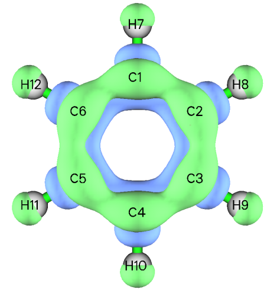
从上图可见，考虑 HOMO 简并的 $f^-$ 分布，即 ($ρ_{N}$ − $ρ_{N}$₋₂)/2，完全符合分子对称性。正区域（绿色等值面所示）主要出现在碳原子上下方的分子平面两侧，从而正确表明 π 电子云易发生亲电攻击。相比之下，若按通常方式绘制 $f^-$，即 $ρ_{N}$ − $ρ_{N}$₋₁，会发现其分布明显违背实际分子对称性，从而对亲电攻击优先位点得出误导性结论。
类似地，可用选项 1、3 和 4 分别可视化考虑前线轨道简并下计算的 $f^+$、$f^0$ 和对偶描述符 Δf 的等值面图。
f⁺ 和对偶描述符计算水平选择的注意
对苯体系，若用含弥散函数的 B3LYP 基组（如 6-311+G*）生成波函数文件，会发现算得的（准）简并 $f^+$ 和 Δf 分布极其弥散（呈现很强的 Rydberg 特征）且不完全符合分子对称性。这是因为该泛函严重的自相互作用误差 (self-interaction error, SIE) 问题使 N+2 态的电子过度弥散，而当前基组有能力描述远离分子的空间区域。此时得到的 $f^+$ 和 Δf 行为不好，不能用于讨论优先反应位点。
值得注意的是，在 Chem. Phys. Lett.，724，29 (2019) 中发现，若基于有限差分评估 Fukui 函数和对偶描述符（与本情形相同），则即使不含弥散函数的 3-zeta 基组基本也能得到有意义的对偶描述符。
尽管本例采用的 B3LYP/6-31G* 水平给出看似合理的 $f^+$ 和 Δf 分布，若追求更严格的结果，我推荐使用长程校正 DFT 泛函如 ωB97XD 配合不含弥散函数的 3-zeta 基组，如 6-311G*。ωB97XD 的 SIE 问题比常用的 B3LYP 弱得多，因此阴离子态电子束缚得更紧；不含弥散函数的 3-zeta 基组已能充分描述价层电子结构，同时电子被迫束缚在价层区域内，保证 $f^+$ 和 Δf 只代表化学感兴趣的区域。
4.22.3.2 C₆₀ 富勒烯的局域软度和局域超软度
在本节说明 C₆₀ 富勒烯局域软度和局域超软度的计算。它们在 J. Math. Chem.，62，461 (2024) 中是在 ωB97XD/6-311+G* 水平下给出的，但本节改用 6-311G* 以大幅节省计算量。由 Gaussian 16 在 ωB97XD/6-311G* 水平下几何优化产生的 .fchk 文件（C60_wB97XD_opt.fchk）可从 http://sobereva.com/multiwfn/extrafiles/C60_wB97XD_opt.7z 下载。
C60_wB97XD_opt.fchk
22 // Calculate various quantities in conceptual density functional theory
-3 // Set degree of frontier molecular orbital degeneracy
[Press ENTER button directly] // Use automatically determined LUMO degeneracy of 3
[Press ENTER button directly] // Use automatically determined HOMO degeneracy of 5
1 // Generate .wfn files for various electrons states
wB97XD/6-311G* symm=loose scf=conver=7 // Keywords for performing single point task of Gaussian. The “symm=loose” ensures that Gaussian will utilize I_h point group of C_60 to greatly reduce cost. “scf=conver=7” slightly loosens SCF convergence threshold to make it easier to reach
-1,2 // Net charge and spin multiplicity of N+1 state
1,2 // Net charge and spin multiplicity of N-1 state现在当前目录下已生成 N.gjf、N-1.gjf、N+1.gjf、N-3.gjf 和 N+5.gjf，输入 y 让 Multiwfn 调用 Gaussian 执行计算（或手动计算）。计算后，当前目录下将有 N.wfn、N-1.wfn、N+1.wfn、N-3.wfn 和 N+5.wfn。
然后选择选项 2 计算各种 CDFT 量并打印到当前目录下的 CDFT.txt。从中可找到软度及其平方：
Softness: 4.638426 Hartree^-1, 0.1705 eV^-1
Softness^2: 21.514996 Hartree^-2, 0.0291 eV^-2接下来，输入以下命令得到局域超软度，它是软度平方与对偶描述符的乘积
3 // Calculate grid data of Fukui function, dual descriptor and related functions
-10 // Set extension distance
6 // 6 Bohr, which is slightly larger than the default one to avoid isosurface truncation at box boundary when isovalue is set to a small value
3 // Since C_60 is not small, we use high-quality grid to guarantee that grid spacing will not be too large and thus leading to poor isosurface map
-1 // Set the scale factor to various grid data
21.514996 // Square of softness in Hartree^-2
8 // Export grid data of scaled dual descriptor as DD.cub in current folder现在当前目录下新生成的 DD.cub 即对应局域超软度，单位为 1/(Bohr³Hartree²)。经 VMD 以 0.001 等值面绘制为等值面图，将看到下图，它与 J. Math. Chem.，62，461 (2024) 的图 4 基本完全相同，尽管当前基组 6-311G* 与该工作中使用的昂贵得多的 6-311+G* 不同。还值得注意的是，该图的主要特征与第 4.22.2 节得到的 C₆₀ 的 $\Delta {f}_{w}$ 相当。
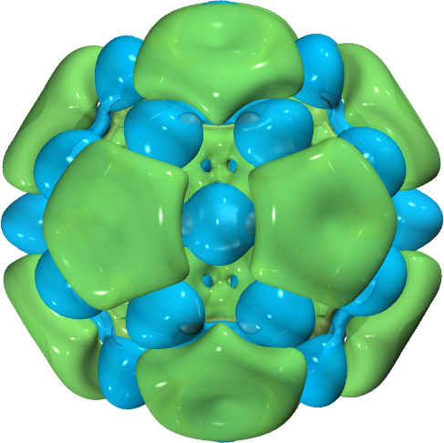
用类似方式可得到局域软度，其定义为软度与 Fukui 函数的乘积。输入以下命令
-1 // Set the scale factor to various grid data
4.638426 // Softness in Hartree^-1
6 // Export grid data of scaled f- as f-.cub in current folder现在当前目录下新生成的 f-.cub 即对应局域软度 $s^-$，单位为 1/(Bohr³Hartree)。下图是经 VMD 绘制的 $s^-$ 的 0.005 和 0.003 等值面，前者与 J. Math. Chem.，62，461 (2024) 的图 2 相同，而后者更清楚地区分最易发生亲电攻击的键（即两个六元环共用的键），它看起来与第 4.22.2 节中 C₆₀ 的 ${f}_{w}^{-}$ 图非常相似。
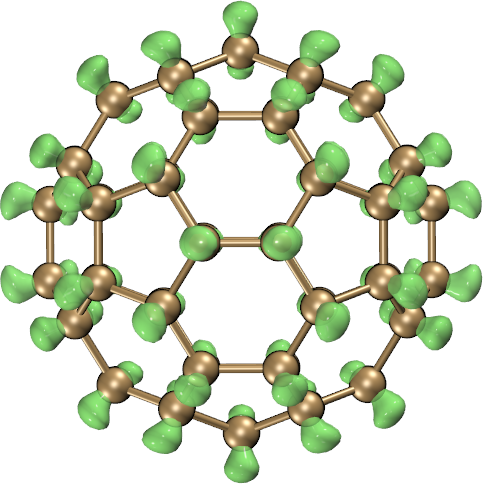
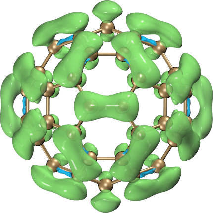
4.22.3.3 开壳层分子 O₂ 的 Fukui 函数和对偶描述符
请先阅读第 3.25.4.2 节以熟悉评估开壳层情形各种形式 Fukui 函数和对偶描述符的工作方程。本例计算 O₂ 的这些函数，O₂ 是有代表性的开壳层分子（三重态基态），前线轨道存在简并。
examples\O2.fch // Wavefunction file of ground state O_2 at B3LYP/6-31G* level
22 // Calculate various quantities in conceptual density functional theory
12 // Calculate Fukui function and dual descriptor based on formalism of conceptual spin-polarized DFT
1 // Set degeneracy of frontier molecular orbitals
[Press ENTER button directly] // Use suggested degeneracy of LUMO(α)
[Press ENTER button directly] // Use suggested degeneracy of HOMO(α)
[Press ENTER button directly] // Use suggested degeneracy of LUMO(β)
[Press ENTER button directly] // Use suggested degeneracy of HOMO(β)[Press ENTER button directly] // Use suggested degeneracy of HOMO(β)现在可看到前线轨道简并度的总结：
Degeneracy of LUMO(alpha): 1
Degeneracy of HOMO(alpha): 2
Degeneracy of LUMO(beta): 2
Degeneracy of HOMO(beta): 2接下来输入
2 //Generate .wfn files for various electrons states
[Press ENTER button directly] // Use the default B3LYP/6-31G* as computational level for generating Gaussian input files现在会发现当前目录下已生成 state0_3.gjf、state-1_4.gjf、state-2_1.gjf、state2_1.gjf 和 state2_5.gjf，它们是为生成研究所涉及各电子态 .wfn 文件的单点任务 Gaussian 输入文件。例如，state-1_4.gjf 对应净电荷 -4、自旋多重度 4。若本机装有 Gaussian，可输入 y 请 Multiwfn 调用 Gaussian 计算它们；或者手动用 Gaussian 计算，再将生成的 .wfn 文件放入当前目录。
现在选择选项 3 并选中等质量格点，开始计算不同态电子密度的格点数据。之后，在后处理菜单中选择将感兴趣的实空间函数可视化为等值面图，或将格点数据导出为 .cub 文件。例如，选择选项 7 绘制 $\Delta{f}_{\Delta{N}_{S}<0}$ 形式的对偶描述符，将等值面改为 0.0005 a.u. 并设材质为透明后，将看到下图，它与 Chem. Phys. Lett.，506，104 (2011) 图 7 中的 DUAL-UDFT 情形完全相同。
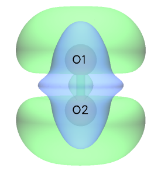
4.22.4 绘制 Fukui 势和对偶描述符势的例子
本例说明为马来酸酐绘制 Fukui 势和对偶描述符势，后者也见于 J. Math. Chem.，62，1094 (2024)，是在 M06-2X/6-311++G(d,p) 水平下计算的，因此我们用同样水平复现该结果。若对这两种势不熟悉，请先查看第 3.25.1 节。
启动 Multiwfn 并输入
examples\maleic_anhydride.xyz //Geometry was optimized at M06-2X/6-311++G(d,p) level
22 // Conceptual DFT (CDFT) analysis
1 // Generate .wfn files for N, N+1, N-1 electrons states
M062X/6-311++G(d,p) // Keywords of Gaussian to perform single point calculations
[Press ENTER button] // Use (0 1), (-1 2) and (1 2) for N, N+1 and N-1 states
y // Invoke Gaussian to calculate the three states (assume that you have properly set “gaupath” in settings.ini)
9 // Calculate grid data of Fukui potential and dual descriptor potential
1 // Because calculating ESP grid data is relatively expensive, so here we choose to use low-quality grid现在，可选择相应选项可视化各种 Fukui 势和对偶描述符势 (dual descriptor potential, DDP)，${V}_{{f}^{+}}$、${V}_{{f}^{-}}$ 和 $DDP={V}_{{f}^{+}}-{V}_{{f}^{-}}$ 的等值面图如下所示，正部和负部分别以绿色和蓝色显示。DDP 图与 J. Math. Chem.，62，1094 (2024) 的图 5 完全一致。DDP 图的绿色部分表明 C4 和 C5 最易发生亲电攻击。实验上已知马来酸酐的这两个原子可与亲核的顺-1,3-丁二烯发生 D-A 加成反应。
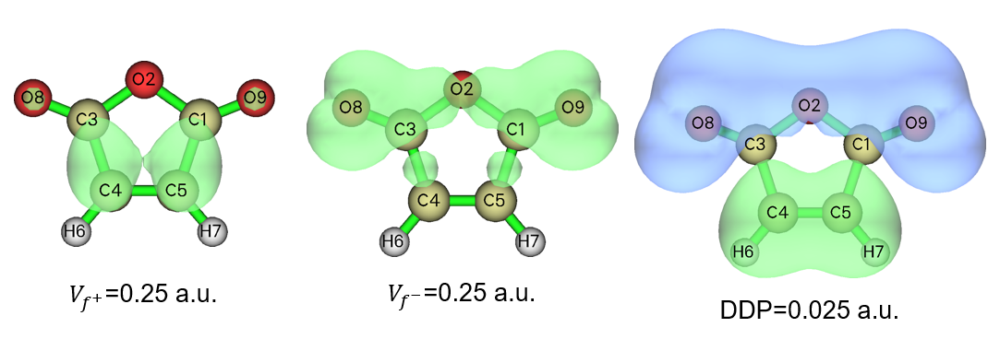
4.22.5 计算键对偶描述符 (bond dual descriptor, BDD) 的例子
注
使用 Multiwfn 计算键对偶描述符研究不同化学键的反应活性”(http://sobereva.com/766)。
请先阅读第 3.25.1 节中关于键对偶描述符 (bond dual descriptor, BDD) 的简要介绍，并阅读第 4.22.1 节以理解概念 DFT 分析模块的基本用法。本节将说明丙烯腈 BDD 的计算，其在 B3LYP/6-31G* 水平下优化的结构如下所示，结构文件为 examples\acrylonitrile.xyz。
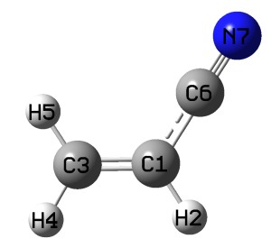
启动 Multiwfn，载入 examples\acrylonitrile.xyz，然后输入
22 // Conceptual DFT (CDFT) analysis
1 // Generate .wfn files for N, N+1, N-1 electrons states
[Press ENTER button directly] // The generated .gjf files will correspond to single point task at B3LYP/6-31G* level
[Press ENTER button directly] // Use default charge and spin multiplicity, namely 0 1 for N state, -1 2 for N+1 state, and 1 2 for N-1 state然后在当前目录下手动用 Gaussian 或请 Multiwfn 调用 Gaussian 计算 N.gjf、N-1.gjf、N+1.gjf，则当前目录下将有 N.wfn、N-1.wfn 和 N+1.wfn。再选择选项“10 Calculate bond dual descriptor (BDD)”。之后，Multiwfn 依次载入 .wfn 文件并计算每个电子态的模糊键级，然后打印 BDD，见下。为便于研究，只直接给出 10 个最正和最负的值。
10 most negative BDD values:
1(C ) 3(C ): -0.562
6(C ) 7(N ): -0.365
3(C ) 7(N ): -0.029
2(H ) 3(C ): -0.009
1(C ) 4(H ): -0.008
1(C ) 5(H ): -0.008
4(H ) 7(N ): -0.001
4(H ) 5(H ): -0.000
5(H ) 7(N ): -0.000
2(H ) 4(H ): 0.000
10 most positive BDD values:
1(C ) 6(C ): 0.312
1(C ) 7(N ): 0.166
3(C ) 6(C ): 0.064
3(C ) 5(H ): 0.016
3(C ) 4(H ): 0.016
2(H ) 6(C ): 0.006
2(H ) 7(N ): 0.004
5(H ) 6(C ): 0.003
4(H ) 6(C ): 0.003
1(C ) 2(H ): 0.001上面的结果表明 C1-C3 是最易受亲电攻击的键（该键呈现最强亲核性），其次是 C6-N7。C1-C6 是最易受亲核攻击的键（该键呈现最强亲电性）。上面给出的一些数据不对应直接成键的原子，如 C1-N7 和 C3-C6，可简单忽略。
Multiwfn 随后询问是否将所有键的 BDD 按原子编号顺序导出到当前目录下的 BDD.txt，并将所有键的 BDD 按数值排序导出到当前目录下的 BDD_sorted.txt。可选择 y 导出。
注意 BDD 计算功能也支持前线分子轨道简并的情形，就像第 4.22.3 节所示例的情形。对这些体系，应在生成 .wfn 文件和 BDD 计算之前用选项 -3 设置 HOMO 和 LUMO 简并度。
4.22.6 计算对偶离域描述符 (dual delocalization descriptor, DDD) 的例子
请先仔细阅读第 3.25.6 节以获得关于对偶离域描述符 (dual delocalization descriptor, DDD) 的基本知识。本节将说明如何为氨基苯计算 DDD 框架下定义的量。该体系在 ωB97XD/6-311G(d,p) 下计算的 .fch 文件可从 http://sobereva.com/multiwfn/extrafiles/aminobenzene_DDD.7z 下载，计算水平和几何构型与 DDD 原论文 Phys. Chem. Chem. Phys.，28，19133 (2026) 中使用的完全相同。我们将用 Hirshfeld 分区定义用于评估原子重叠矩阵 (atomic overlap matrix, AOM) 的原子空间，该做法在 DDD 原论文中也被采用。
启动 Multiwfn 并输入
aminobenzene_DDD.fch // The file in the compressed package mentioned above
22 // Conceptual DFT (CDFT) analysis
11 // Calculate dual delocalization descriptor (DDD)
2 // Calculate AOM via Hirshfeld partition现在已生成 AOM，可输入两个原子的编号以研究相应键的 DDD。例如，输入 1,6，它对应间-对位 C-C 键，将看到
Result of 1(C ) -- 6(C )
f-: 0.067452
f+: 0.026544
g-: 0.017868
g+: 0.011229
f(1): -0.040907
f(2): -0.056481该结果与 DDD 原论文表 2 中的相应数据完全相同，除了 $g^-$，我们的结果是表 2 中值的两倍。我们的结果是正确的，实际上若严格按该论文 Eq. 29 评估，表 2 中的 $g^-$ 应加倍。